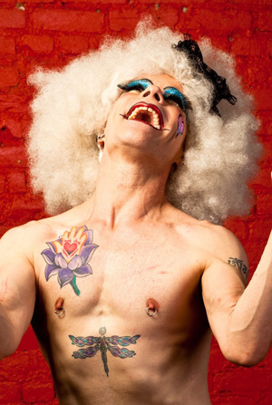

|
New Romanticism and Decadence!
Faux Pas le Fae & Fyodor Pavlov open the doors to Spring with an invitation to celebrate Dance and Visual Art in the most Queer fashion!
The season features diversely sexy performances and an exhibit of sensual pleasure. A celebration of the queer, the exotic and the divinely sexy! Featuring the amazing dance artists of KineticArchitecture and starring a menagerie of New York’s most Sparkly and Divine Divas! Chez le Fae: Tuesday April 8th, Tuesday April 15th & Sunday April 27th at 8pm
A celebration of the queer, the exotic and the divinely sexy! Featuring the amazing dance artists of KineticArchitecture and starring a menagerie of New York’s most Sparkly and Divine Divas!
|
 |
|
Diaghilesque: Wednesday April 9th & Wednesday April 16th at 8pm
The lavish and profound gems of Diaghilev’s Ballet Russe are given a Post Modern/Burlesque treatment by KineticArchitecture. "dance, gravity-defying gymnastics, yoga and S & M" -TimeOut NY and Burlesque Stars Darlinda Just Darlinda, Minnie Tonka, Scary Ben, Matt Knife, Lewd Alfred Douglas and Victor Devonne.
Forbidden Fruits: Thursday April 10th at 10pm
The most notorious creatures of the late night underworld NY stage are brought together for a one night only show that will be burned in your memory forever! Starring Velocity Chyaldd, Darlnda Just Darlinda, Faux Pas le Fae & Aurora North to name a few...
|
|
Faux Pas le Fae
Faux Pas le Fae has been described by critics as a “joyful dancer with a Puck-like sense of mischief.” -Houston Chronicle, and is Artistic Director of professional dance company-KineticArchitecture which performs throughout NYC. Faux has studied on scholarship at The Pennsylvania Ballet and Gus Giordano Jazz Dance Chicago. Major credits include Seán Curran Company, Ballet Preljocaj, The World Jazz Dance Conference, Justin Bond's House of Whimsey, Inbred Hybrid Collective, Homo Erectus, The New York Burlesque Festival and Dixon Place. Faux Pas has also been featured in the work of Luma Rouge at The Museum of Sex, on Tigger’s MAN-ATEAZE & World Famous Bob’s Drag Race at Coney Island’s Burlesque at the Beach, The David Bowie Ball and The Box-NYC. "Whether it was his perky black tutu or nipple rings, the plumage did the trick." -NY Times. The Esther Williams of Modern Dance (translation: Butoh & Burlesque have baby!) is loved by children and cats.
Fyodor Pavlov's Illustrations will be on exhibit April 8th-April 27th
Fyodor Pavlov’s art inhabits a palace of old-world aestheticism with a cock-shaped summerhouse. Russian émigré and longtime New Yorker, Fyodor Pavlov's illustration brings new life to the past for contemporary audiences. Maintaining a strong portfolio focused on motifs of history and queer sexuality, his experience in the artistic community spans international and domestic commissions, comics, and polished personal works. Working primarily through the medium of watercolor and ink, the stylistic artistry of Pavlov's illustration places a distinct emphasis on detail when addressing subjects spanning from the Edwardian Era and Jazz Age to muses of our current day.
Fyodor's work has been featured in Zelda Magazine, Tor.com, Sherlock Holmes Mystery Magazine, and more. He has also illustrated such prestigious events as the Liberty Belle Extravaganza and Thomas Edison's Stag Party in New York, and The Black Cat Cabaret in London, and he has extensive experience in working artistically for the burlesque community both in the US and abroad.
|